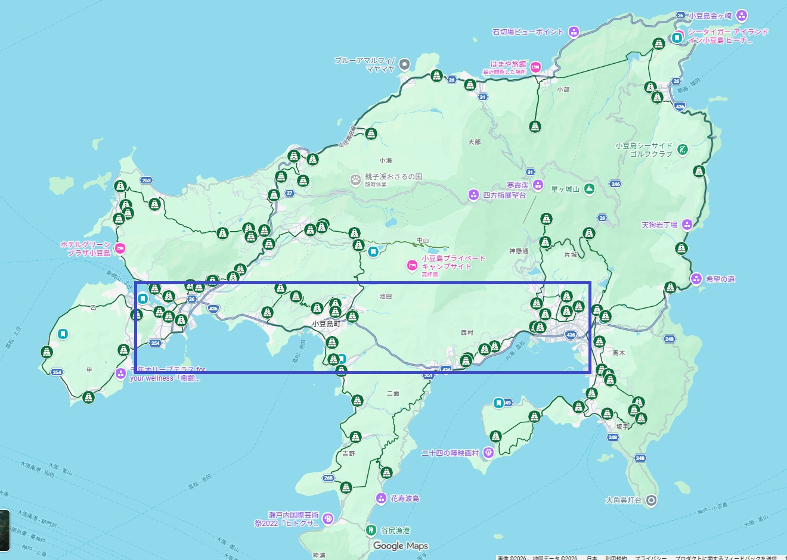

🌿 はじめに
小豆島八十八ヶ所は、四国遍路ほど商業化されておらず、素朴で静かな巡礼ができる場所です。 ただし、宿泊・食事・交通の選択肢が限られるため、事前準備が旅の快適さを大きく左右します。
ここでは、実際に歩いた人の経験をもとにした リアルで役立つ注意点をまとめています。
🗺 四国お遍路との違い
四国
- 歩きだと二か月かかる
- 車・バイクでも10日程度かかる
- お坊さんと話す機会が少ない。商業的対応が多かった
- 小豆島より歩き遍路する人が多い
- 歩き遍路が泊まれる宿が比較的多い
- 宿坊が少し残っている
小豆島
- 歩きだと一週間で回れる（サラリーマンでも休みを取れば回れる！）
- 車・バイクでも2～3日で回れる
- お坊さんと話す機会が多い。ご縁が多いと思う
- 歩き遍路する人がほぼいない。車かバスが多い
- お遍路宿が少ない（新型コロナの影響で2026年現在、2件のみ）
- 宿坊がない（以前はあったが全てなくなったとのこと）
🧭 事前準備
情報収集
-
小豆島霊場会の公式ページで、小豆島のお遍路とモデルルートを参考にしましょう
小豆島霊場会 公式サイト - お勤めの方法を覚えておく（どこまでするのか決めて）
-
Googleにログインした状態で一旦
「小豆島八十八ヶ所巡礼 お遍路 - Google マイマップ」を開いておく。
履歴に残ることで、スマホからも同じマップを開けるようになります。
小豆島八十八ヶ所巡礼 お遍路 - Google マイマップ
地名・バス・宿
- 小豆島の地名をしっかり覚えておく（覚えておかないと、地元の方と話していても何を言っているのか分からないため）
- 半島の名前も憶えておく
- バスの路線と、バスの発着時間を直ぐに調べておける状態にしておく
※Google Mapでバス停を選択すると、出発時刻が分かります - 泊まる宿の候補をピックアップしておく
装備の準備
- お遍路に関するホームページで調べて、必要であれば事前にインターネットで注文して用意しておくこと
- 装備の例：
・リュックサック
・雨具
・着替え
・靴（歩き易いもの）
・グローブ（濡れた岩を登る時などに使用、防寒兼ねる）
・水筒
・折りたたみ傘
・モバイルバッテリー
・ヘッドライト
・地図
・行動食
・水筒かペットボトル
・鈴（イノシシ、サル用）
📌 歩き遍路の心得・実践アドバイス
■ 歩きお遍路するための自分のルールを決めておく
- お勤めはきちんと全ての寺・庵でするのか
- お遍路の古道だけを歩くのか
- 決められた日程以内にするため、最悪、バスなどの交通手段を使うのを許容するのか
-
特定の宿で連泊して、そこからバスを駆使しながらお遍路するのか
特定の宿に連泊すると、重い荷物を置いて各寺を参拝できるのは楽
※小豆島の場合は、宿を固定してもバスを駆使すれば何とかなります
■ 地図について
- 小豆島で配布しているパンフレットやGoogle Mapでは、情報が足りない
※標高や山道であることが分からない - 標高や険しい道であることが分かる地図を用意しておくのがベスト
筆者は、パンフレットとGoogle Mapを使って歩いたが、行ってみたら想定外に険しい山道があったりして困りました。
下の図の赤枠の箇所は、実際に歩ていて厳しかった箇所です。

■ ルートについて
- お遍路の古道を無理に歩く必要はない（安全優先）
※荒れている箇所もあるため、困った時は道路を迂回した方がいい道がある。個人的には、荒れた遍路道は避けた方がいいと思います。 - 寺の番号順に歩く必要はない。一筆書きで効率的に歩ける様にルートを考えること
■ 身体とペース
- 初日に歩いてみないと、自分のペースが分からない
- 体が慣れるまで、最低二日程度かかる。三日目・四日目あたりから身体が慣れてくる
■ 食事・補給
- 少なくとも、半日分の行動食を用意しておくこと
- 福田〜坂手は食事処がほぼ無い
- 島北部食事処がほぼ無い
ランチを期待できるのは、坂手～土庄の間のみ。
下の図の青枠の箇所は、ランチが比較的食べれる箇所です（それ以外はあまり期待しない）

■ 宿泊
- 小豆島はインターネット予約できない宿が多い。分からなければ電話で確認
- Google Mapを見ると営業している様に見える宿が、実は営業していないことがあるので、
電話や地元の人の話を聞いて確認しておくこと - お遍路宿だけを使って歩き遍路をするのは厳しい（新型コロナの影響で2026年現在、2件のみ）
■ 装備・準備
- モバイルバッテリーは余裕をもって、大容量にしておくこと
- 地図はあらかじめ購入しておいた方がいい
■ 季節の注意
- 4月下旬：毛虫多い
- GW以降～10月：マムシが出る
■ 宿泊の考え方
- 野宿に慣れていない方は、遍路宿や民宿・ゲストハウス・旅館を使うこと
- インターネットで調べるのが面倒な方は、遍路宿にしておけばとりあえず安心
※ただし、設備は一昔前になるので覚悟しておくこと
📘 実際に歩いてみた感想
-
小豆島の歩き遍路道をなめないこと。
四国のお遍路より楽と思われがちですが、地形の険しさは小豆島の方が上です。
実際に、四国を歩き遍路した方が、小豆島を歩き遍路をして厳しく感じたとのことでした。 -
実際に歩きお遍路をしていると、何らかのイベントが発生し、予定よりも遅れます。
余裕を持って行動しましょう。
※護摩があって参加する、お寺の方と話し込んでしまうなど -
お勤めをすると、一日20～30キロが限界。
一日20キロ前後が現実的で無理がない - 山岳霊場の日は「1時間4km」で計算しない方が良い